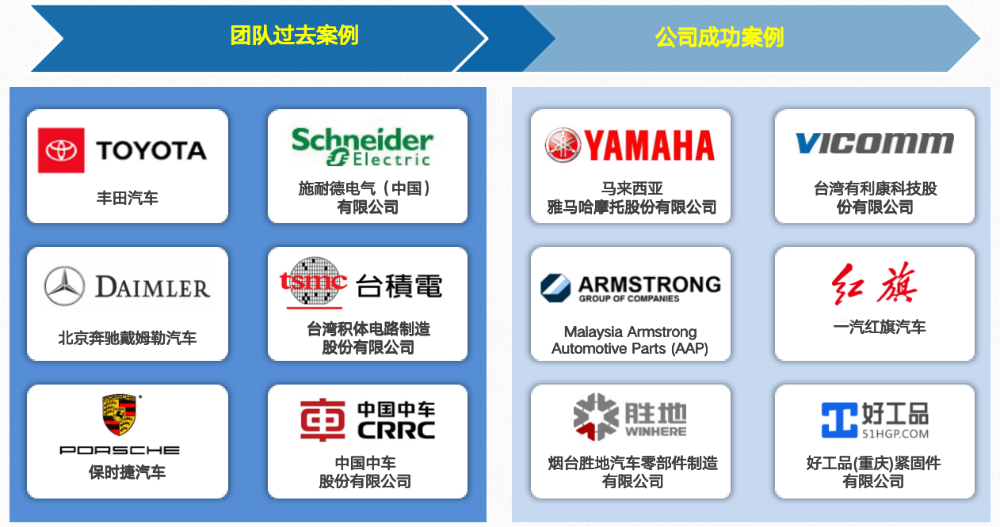

成功案例
成功客户案例摘要

经典案例介绍 – 一汽红旗新能源汽车工厂电池生产仓储
红旗新能源 公司是中国一汽集团直接运营的高端汽车品牌。自1958年红旗品牌创立以来，红旗轿车长期被用作中国重大庆典活动的检阅车，是中国民族汽车高端品牌代表之一。
本项目为新能源动力总成事业部创意厂区电池智能仓储系统提供高位立体库货架系统、智能堆垛机系统、输送搬运系统、电池上线系统、电池转运输送系统、库内电池检测系统、拆码盘机系统、计算机管理监控系统及仓储管理系统等，用于一汽集团新能源动力总成事业部创意厂区的电池车间成品电池的输送及存储并满足生产要求。
本工程为交钥匙工程。交钥匙工程是指投标方应当负责整体方案规划及合同设备的设计、制造、运输、安装（包含但不限于：设备设计、选材、制造、组装、测试、安装等）、调试、培训、交付验收、售后服务等。投标方所提供的设备必须保证达到并满足招标方的生产要求和质量要求，否则造成的后果全部由投标方负责。
经典案例介绍 – 国轩高科金寨自动化仓储物流输送系统
国轩高科新能源电池公司是一家成立于2006年，总部位于中国合肥的新能源科技企业。该公司致力于新能源汽车动力锂电池、储能、输配电设备等业务板块的研发、生产和销售，拥有独立成熟的研发、采购、生产、销售体系。
国轩高科是中国新能源动力电池的重要制造商之一，也是全球新能源锂电行业的领军企业之一。其动力锂电池业务已成为公司的最大业务，同时在国内和全球的动力电池装机量排名中也有所上升。此外，国轩高科还积极参与储能电站、通讯基站等领域的系统解决方案提供，并且在研发、技术创新方面也取得了多项国内及国际认证和荣誉。
项目落地在合肥金寨二期新能源电池工厂，涉及蓝本电池从电芯原料生产及加工工艺环节，到半成品装配组装环节，到测试验证环节整体自动化生产，简化人员管理及工作环节，提高智能管理水平。同时在各工艺生产间均实现自动上下料，并与各个物资仓储场地内完成自动出入库对接。
经典案例介绍 – Bosch Mobility
Bosch Mobility presents highlights from the areas of connected mobility, automated mobility, and powertrain systems and electrified mobility. Find out more about our products and services, not only for passenger cars, but also for commercial vehicles, two-wheelers, off-highway applications, and ship and rail transport.
Bosch offers a wide range of spare parts to the aftermarket and repair shops – from new and exchange parts to repair solutions – as well as repair shop equipment such as diagnostic software and hardware. With service training courses and partner programs for repair shops, Bosch offers automobile competence and knowledge to service technicians all over the world. Thus, repair shops can test and repair more efficiently, more safely, and more quickly.
经典案例介绍 – 烟台胜地汽车零部件
烟台胜地汽车零部件制造有限公司成立于1995年，是中国最大的刹车盘和刹车鼓制造商，目前年产量已超过3000万片。
捷方提供了WMS软件及算法，系统对接金石机器人堆垛机，实现高位高密度立体库堆垛机自动管理库存。
项目一期：为2台堆垛机完成600个库位搬运
项目二期：将扩展至12台堆垛机管理近9000个库位的出入库作业
1、出入库口混合切换使用
2、且入库分为一层直接进入货位与提升机直接提升两种
3、可同时进行两类货物入库接驳
4、搭配自动举升平台以降低叉车的放货难度
5、为后续改用无人叉车做准备
电子半导体行业案例
经典案例介绍 – 有利康电子科技
有利康公司位于新竹的POC展厅，现场区分库区，搭建了移动货架存储、料箱库位存储、整托立库存储三种形态以及对应作业方式。
采用一套WMS系统同时管理三种不同自动化模式的仓储作业，根据现场要求定制展示大屏。
经典案例介绍 – 世界知名半导体公司
知名半导体行业客户（世界市值前十大公司）在产品需求量、生产及物料仓储需求日益扩大的情况下，提出了「仓储自动化」改善计划，该计划面临着占地面积、各物料收货码头面积，各厂区每日货物吞吐量，以及须配合上万种产品与原料等多方面问题，且客户对于整体的搬运系统的调度和交通管理方面有着极高的标准，尤其是稳定性和精准性方面，现有方案无法达到预期效果和功能。
故采用整套系统解决方案，并以其现有的2座工厂（全世界最先进制程的2座工厂，已独家完成一期）为起点，导入两套解决方案。2021年将陆续在其他3座厂区导入晶圆仓储自动化搬运系统以及无人叉车搬运系统。
因人力严重不足，物料、成品及办成品搬运量比较大；
许多货物中含化学品（原物料及半成品）具有腐蚀性，对人体及设备有危害，且重量较重，不便于人工搬运，想要引入自动化物流搬运系统，以降低职工作业风险，提高生产效率；
场景中有金属反光，还有一定的光线差异问题；
半导体行业，尤其是该客户对于系统安全性、稳定性要求极高，在提供物流搬运系统解决方案，需考虑各种环境影响，异常的处理和跟踪，监控作业状况以及各种设备之间的交互管理。
经典案例介绍 – 好工品(重庆)紧固件有限公司
好工品(重庆)紧固件有限公司是专注于工业零部件B2B/B2C交易平台。除自采自销的产品线外，建立新仓开始扩展引入第三方供应商，来拓展工业品供应链业务。新仓库采用出入库全自动无人作业方式，未来以京东无人仓为目标来寻求解决方案。
在仓储面积12000m²，层高10米的区域内，需规划出最大支持15万箱货物存储量，并且通过动态库存调整，满足峰值日出货达到流量需求。
城轨运输行业案例
经典案例介绍 – 贵阳地铁S1线一期线物资总库
贵阳市地铁S1线一期物资总库，是贵阳市第四条建成运营的地铁线路，于2019年11月7日开工建设，于2024年12月28日开通运营一期（皂角坝站—望城坡站）。我司在项目中为其承建了车辆检修段的物资立体库部分，也已正式投入使用。同时该项目也是城轨项目中首个采用了“数字孪生”技术进行物资库管理的智能立体库项目。
配套智能立库的1:1数字孪生技术加入，实现库内物资管理透明化，数字化
减少占地面积需求的同时，通过集约化设计降低建设成本；自动化管理也减少了人力成本和人为错误风险。
物资总库的立体化设计为S1线提供可靠的物资保障，确保列车检修、故障救援等工作的及时性，间接提升线路运能
立体库的先进设计为后续轨道交通项目提供参考，推动贵阳乃至西南地区在轨道交通仓储管理领域的技术升级。

经典案例介绍 – 太原地铁2号线物资总库
太原市城市轨道交通1号线一期工程场段物资立体库项目。太原地铁1号线已于2025年2月22日开通运营一期。我司配合建设位于马练营的车辆检修站点内的物资总库，为其提供从软件、立体库硬件、货架系统等一整套智能立库解决方案。
重型设备物资库
高密度存储，货架占地面积750㎡，存储了以往需要平铺一整个库房的所有物资，
大小货分区存储，场地空出一半空间用于小件物资存取，进一步提高空间利用率
全自动库存管理，搭配立体库专用WMS系统实现物资库存自动分配
经典案例介绍 – 天津地铁7号线物资自动化仓库
海外案例
经典案例介绍 – AAP 马来西亚槟城 自动化仓储
阿姆斯特朗自行车配件公司成立于1972年，专注于自行车辐条和辐条帽的制造，1978年随着阿姆斯特朗汽车零部件公司（AAP）的成立，其业务范围扩大到摩托车零部件。
自1989年以来，该公司不断扩大业务，进军汽车行业。现在，它是一家专注于汽车零部件制造业务的公司，产品种类繁多。
公司于2024年开始对位于马来西亚槟城市、芙蓉市的两座汽车零部件工厂进行整体仓储自动化改造，以应对当前人员过多，管理繁杂，且人员素质不足的问题，同时也为未来业务方向的拓展做好提前布局与准备。
从送货司机卸货一刻开始，全面使用WMS系统进行收货-暂存-入库前分拣-入库-上架 的标准化入库流程进行库存管理，并严格按效期做数据记录；
由料箱搬运机器人执行小件货品从入库到上架、拣货到出库台的库内转运工作；
考虑出库拣选的效率，货位全采用单深位货架，以提高AGV搬运速度；
通过LED电子标签分拣墙进行分拣管理，降低人工作业错误率，并提高拣选效率；
由WMS对库存分配进行管控，无需人工干预，并可根据生产物料所需，以及库内库存库龄情况做优化调整，通过数据反馈给出合理采购和备料计划；